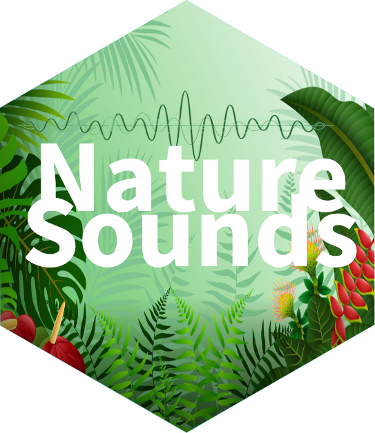

Acoustic data sets in NatureSounds
¶
Marcelo Araya-Salas,
PhD
¶ “2022-12-20” ¶
Source: vignettes/Acoustic_data_sets_in_NatureSounds.Rmd
Acoustic_data_sets_in_NatureSounds.Rmd

NatureSounds contains a collection of animal sounds for bioacoustic analysis. The main goal is to provide example acoustic data to faciliate the development of bioacoustic tools in the R environment. At the same time, this data can be used as case studies for showing the functionality of tools already available in R. This tutorial offers a quick glance over the acoustic data sets included in the package.
Most data sets are provided as extended selection tables. These are R
objects that contains both the annotations (locations of signals in time
and frequency) and the corresponding acoustic data as wave objects.
Therefore, these are self-contained objects since the
original sound files are no longer needed to perform acoustic analyses.
These objects are created by the function selection_table()
from warbleR.
Take a look at the intro
to warbleR vignette for more details and check out the packages warbleR, tuneR and seewave for sound
file manipulation and analysis in R.
Long billed hermit songs
The example data ‘lbh.est’ is an extended selection table containing long-billed hermit (Phaethornis longirostris) songs. The data contains the annotations and wave objects of 50 long-billed hermit songs from 10 different song types (5 per song type, ‘lek.song.type’ column) recorded at 8 leks (‘lek’ column) in the Caribbean slope of Costa Rica. This data set was used in Araya-Salas et al 2019 to show lek (social group) level signatures in song structure. See this blog post for details on statistical analysis.
The spectrograms of the song types can be displayed using the
catalog() function from warbleR:
library(warbleR)
# create a color palette
trc <- function(n) terrain.colors(n = n, alpha = 0.3)
# set global options for catalogs
warbleR_options(same.time.scale = TRUE, mar = 0.001, res = 100, spec.mar = 1, max.group.cols = 5, ovlp = 95,
width = 23, height = 12.5, tag.pal = list(trc), hatching = 0, cex = 1.3, rm.axes = TRUE, path = "~/Dropbox/R_package_testing/NatureSounds/", box = FALSE)
# load data
data("lbh.est")
# plot catalog
catalog(X = lbh.est, flim = c(1.5, 10.5), nrow = 10, ncol = 5, group.tag = "lek.song.type", height = 25, cex = 2,
title = "Long billed hermits", img.prefix = "lbh.est", wl = 100)
Song types are labeled by color groups of consecutive spectrograms.
Monk parakeet contact calls
‘monk.parakeet.est’ contains annotations and wave objects of 52 monk
parakeet calls from four different social scales (individual, flock,
pair, site; ‘scale’ column). The ‘ID’ column refers to selections
belonging to the same individual when scale == "Individual.
See Smith-Vidaurre, Araya-Salas & Wright
(2019) for more details.
# load data
data("monk.parakeet.est")
# monk parakeets
catalog(X = monk.parakeet.est, flim = c(1, 11), nrow = 7, ncol = 8, group.tag = "scale",
title = "Monk parakeets", img.prefix = "monk.parakeet.est", wl = 300)
In this case color groups refer to the different social scales in the data.
Spix’s disc-winged bat social calls
‘thyroptera.est’ is an extended selection table of Spix’s disc-winged bats (Thyroptera tricolor) social calls. The data contains the annotations and wave objects of social from 8 individual Spix’s disc-winged bats (‘id’ column) belonging to 4 social groups (‘group’ column). See Araya-Salas et al (2020) for more details. Can be used (among other things) to test for individual acoustic signatures.
# load data
data("thyroptera.est")
# thyroptera
catalog(X = thyroptera.est, flim = c(2, 60), nrow = 5, ncol = 8, group.tag = "group", title = "Spix's disc-winged bats", img.prefix = "thyroptera.est", wl = 300)
Color groups refer to calls from individuals belonging to the same social group.
Additional acoustic data
The package also includes 5 wave objects that were originally included as example data in warbleR. These are 4 wave objects with long-billed hermit song bouts and 1 with 2 songs from a little tinamou (Crypturellus soui).
Long billed hermit wave objects
# load data
data("Phae.long1", "Phae.long2", "Phae.long3", "Phae.long4", "Cryp.soui")
# spectrogram
seewave::spectro(Phae.long1, wl = 100, scale = FALSE, ovlp = 90, grid = FALSE, palette = seewave::reverse.gray.colors.1, collevels = seq(-50, 0, 5))
# spectrogram
seewave::spectro(Phae.long2, wl = 100, scale = FALSE, ovlp = 90, grid = FALSE, palette = seewave::reverse.gray.colors.1, collevels = seq(-50, 0, 5))
# spectrogram
seewave::spectro(Phae.long3, wl = 100, scale = FALSE, ovlp = 90, grid = FALSE, palette = seewave::reverse.gray.colors.1, collevels = seq(-50, 0, 5))
# spectrogram
seewave::spectro(Phae.long4, wl = 100, scale = FALSE, ovlp = 90, grid = FALSE, palette = seewave::reverse.gray.colors.1, collevels = seq(-50, 0, 5))
Little tinamou wave object
# spectrogram
seewave::spectro(Cryp.soui, wl = 1200, scale = FALSE, ovlp = 90, grid = FALSE, palette = seewave::reverse.gray.colors.1, collevels = seq(-35, 0, 2), flim = c(1.4, 2.4))
References
Araya-Salas M, G Smith-Vidaurre. 2017. warbleR: An R package to streamline analysis of animal acoustic signals. Methods Ecol Evol 8:184–191.
Araya-Salas M, G Smith-vidaurre, D Mennill, P Gonzalez-Gomez, J Cahill & T Wright. 2019. Social group signatures in hummingbird displays provide evidence of co-occurrence of vocal and visual learning. Proceedings of the Royal Society B. 286: 20190666
Smith-Vidaurre G, M Araya-Salas, & T Wright. 2019. Individual signatures outweigh social group identity in contact calls of a communally nesting parrot. Behavioral Ecology.
Araya-Salas M, A Hernandez-Pinson, N Rojas & G Chaverri. 2020. Ontogeny of an interactive call-and-response system in Spix’s disc-winged bats. Animal Behaviour.
Session information
## R version 4.2.1 (2022-06-23)
## Platform: x86_64-pc-linux-gnu (64-bit)
## Running under: Ubuntu 20.04.5 LTS
##
## Matrix products: default
## BLAS: /usr/lib/x86_64-linux-gnu/blas/libblas.so.3.9.0
## LAPACK: /usr/lib/x86_64-linux-gnu/lapack/liblapack.so.3.9.0
##
## locale:
## [1] LC_CTYPE=es_ES.UTF-8 LC_NUMERIC=C
## [3] LC_TIME=es_CR.UTF-8 LC_COLLATE=es_ES.UTF-8
## [5] LC_MONETARY=es_CR.UTF-8 LC_MESSAGES=es_ES.UTF-8
## [7] LC_PAPER=es_CR.UTF-8 LC_NAME=C
## [9] LC_ADDRESS=C LC_TELEPHONE=C
## [11] LC_MEASUREMENT=es_CR.UTF-8 LC_IDENTIFICATION=C
##
## attached base packages:
## [1] stats graphics grDevices utils datasets methods base
##
## loaded via a namespace (and not attached):
## [1] rstudioapi_0.14 knitr_1.41 magrittr_2.0.3 R6_2.5.1
## [5] ragg_1.2.4 rlang_1.0.6 fastmap_1.1.0 stringr_1.5.0
## [9] tools_4.2.1 xfun_0.35 cli_3.5.0 jquerylib_0.1.4
## [13] systemfonts_1.0.4 htmltools_0.5.4 yaml_2.3.6 digest_0.6.31
## [17] rprojroot_2.0.3 lifecycle_1.0.3 pkgdown_2.0.6 textshaping_0.3.6
## [21] purrr_0.3.5 sass_0.4.4 vctrs_0.5.1 fs_1.5.2
## [25] memoise_2.0.1 glue_1.6.2 cachem_1.0.6 evaluate_0.19
## [29] rmarkdown_2.19 stringi_1.7.8 compiler_4.2.1 bslib_0.4.2
## [33] desc_1.4.2 jsonlite_1.8.4